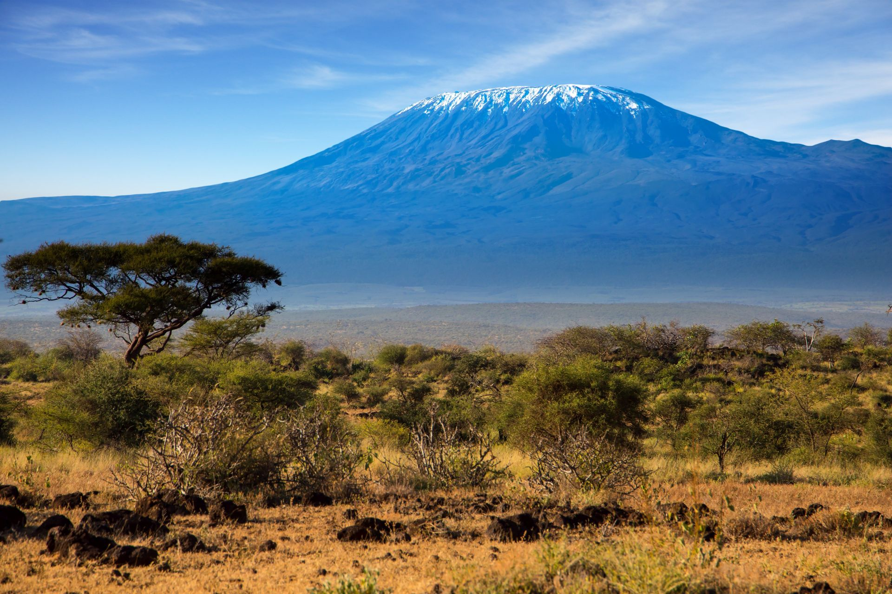
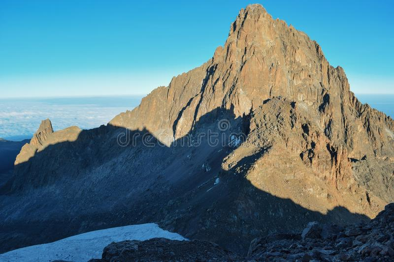

Najwyższe szczyty Afryki
Kontynenty


Kilimandżaro
- Wysokość: 5 895 m
- Kraj: Tanzania
- Pasmo: Eastern Rift mountains
- Wybitność: 5 885 m
- Pierwsze wejście: 1889 - Hans Meyer, Ludwig Purtscheller
- Współrzędne: 3°04′S 37°21′E
Batian
- Wysokość: 5 199 m
- Kraj: Kenia
- Pasmo: Wielki Rów Wschodni
- Wybitność: 3 825 m
- Pierwsze wejście: 1899 - Halford John Mackinder
- Współrzędne: 0°09′22″N 37°19′05″E